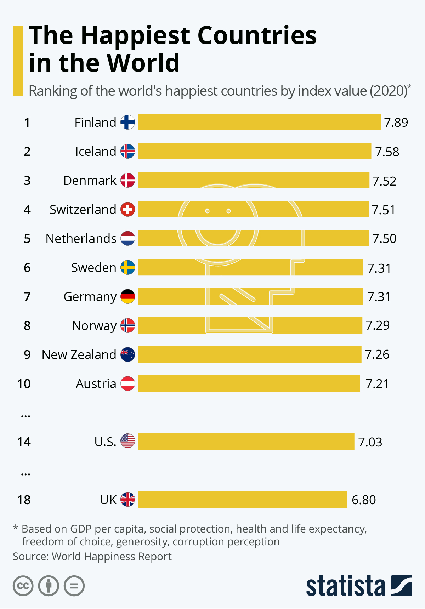
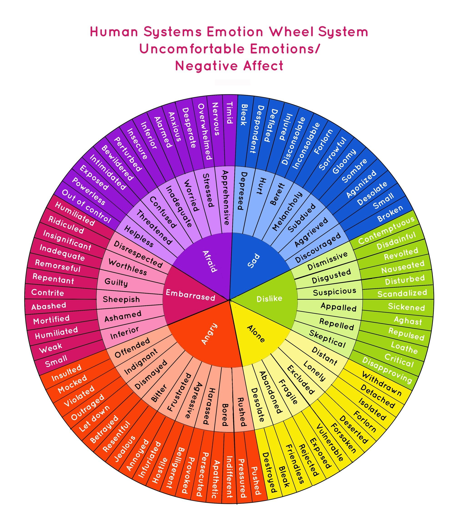
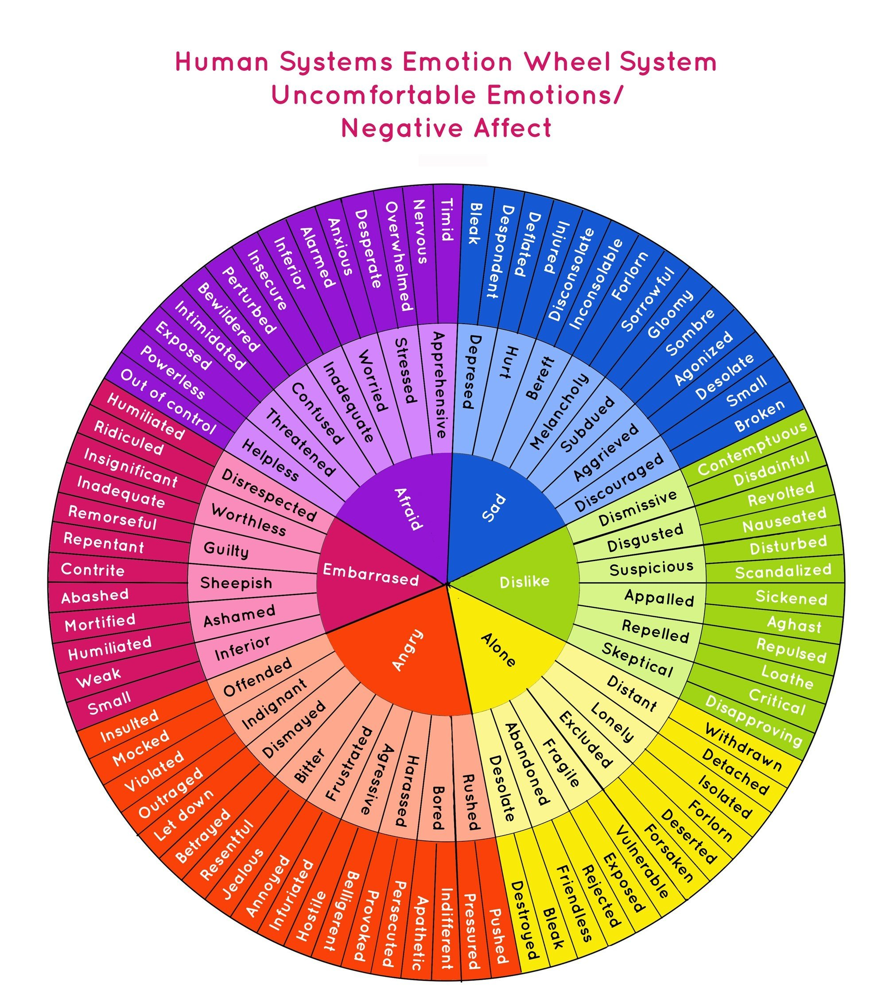

Scientific data
✨Here are some scientific data from psychology about what happiness does mean and how can we define it!
The report also does a regression analysis to look at how happiness scores could be explained, by looking at tangible and intangible factors that could factor in:
↬ Social support
↬ Life expectancy
↬ Freedom to make life choices
↬ Generosity
↬ GDP per capital
↬ Perceptions per corruption
↬ Positive and negative affects
This is a percentage table of happiness in Europe:
| Country |
Percent |
| Spain |
64% |
| Greece |
57% |
| Finland |
78% |
| Denmark |
76% |
| Sweden |
73% |
Be careful about these important advices from psychologists about wellbeing:
💰Money can only buy happiness up to about $75,000 – after that, it has no significant effect on our emotional wellbeing;
🔃Trying too hard to find happiness often has the opposite effect and can lead us to be overly selfish;
🧓Happiness makes us better citizens - it is a good predictor of civic engagement in the transition to adulthood;
🧠Happiness leads to career success, and it doesn’t have to be “natural” happiness – researchers found that “experimentally enhancing” positive emotions also contributed to improved outcomes at work;
The scientific research on happiness at work:
😄People who are happy with their jobs are less likely to leave their jobs, less likely to be absent, and less likely to engage in counterproductive behaviors at work;
🚶People who are happy with their jobs are more likely to engage in behavior that contributes to a happy and productive organization, more likely to be physically healthy, and more likely to be mentally healthy;
🤝Happiness and job performance are related - and the relationship likely works in both directions;
📌Unit- or team-level happiness is also linked to positive outcomes, including higher customer satisfaction, profit, productivity, employee turnover, and a safer work environment;
8 Interesting Facts And Findings about how your happiness can improve your health:
🏵Happiness is linked to lower heart rate and blood pressure, as well as healthier heart rate variability;
🏵Happiness can also act as a barrier between you and germs – happier people are less likely to get sick;
🏵People who are happier enjoy greater protection against stress and release less of the stress hormone cortisol;
🏵Those who are happiest tend to live significantly longer than those who are not;
🏵Happiness boosts our immune system, which can help us fight and fend off the common cold;
🏵Smelling floral scents like roses can make us happier;
🏵Being outdoors – especially near the water – can make us happier;
🏵Happiness is contagious! When we spend time around happy people, we’re likely to get a boost of happiness as well;
An expressive image of the happiest countries in the world :

As you can see, Scandinavia is still the world's happy place, firmly holding on to the top 3 of the World Happiness Report in 2020. Finland, Iceland and Denmark were named as the world's three happiest countries in the study that is based on surveys by Gallup as well as developmental indicators.
Many people believe happiness is a brief, temporary state of mind. For some, it’s having a high-quality life; for others, it’s earning a lot of money. But, what exactly is happiness? Is there a country where both locals, as well as travelers, expats, and digital nomads, feel happy?
One thing is for sure, sunshine and nice weather don’t always equal happiness. According to the World Happiness Report, the world’s happiest people live in freezing temperatures, swim in chilly waters, and pay hefty taxes.
In a quest to help you find your happy place, we’ve listed the top 10 happiest countries.
→ 1st Finland (7.821)
→ 2nd Denmark (7.636)
→ 3rd Iceland (7.557)
→ 4th Switzerland (7.512)
→ 5th The Netherlands (7.415)
→ 6th Luxembourg (7.404)
→ 7th Sweden (7.384)
→ 8th Norway (7.365)
→ 9th Israel (7.364)
→ 10th New Zealand (7.364)
What is an Emotion?
The concept of emotion may seem simple, but scientists often have trouble agreeing on what it really means. Most scientists believe that emotions involve things other than just feelings. A feeling is something that you experience internally, in your own mind, and that other people can understand based on your behavior. You can help other people understand how you feel using emotion terms, like “anger” or “sadness”—the subject of this study—or by using analogies, like “I feel the way a kid would feel if her dad took away her Halloween candy.” They involve bodily reactions, like when your heart races because you feel excited. They also involve expressive movements, including facial expressions and sounds—for example, when you say “woah” because you are fascinated by something. And emotions involve behaviors, like yelling at someone when you are angry.
⚝ For many years, most psychologists (scientists who study the mind, and why we do the things that they do) believed that emotions could be boiled down to five or six types. The most widely studied types of emotion—anger, disgust, fear, happiness, and sadness.
⚝ Other scientists believe that there are just two properties that make us experience emotion in any situation and they are called valence and arousal.
Valence means the degree to which a person feels good or bad, and arousal means the degree to which a person feels calm or excited. Scientists who support this view usually also believe that the differences between emotions like anger and fear, which are both negative (low valence), highly excited (high arousal) states, come from our interpretations of the actual events that are going on, rather than from specific emotional feelings.
 


Don't ever forget : Happiness is a direction,
not a place!